Teaching Scalable AI Systems and Knowledge Distillation at Super AI Engineer Thailand
A deep technical reflection on six labs covering profiling, pruning, quantization, knowledge distillation, lightweight architecture design, and multi-camera edge deployment
 Dr. Teerapong Panboonyuen (Dr. Kao) teaching scalable AI systems and knowledge distillation at Super AI Engineer Thailand, Pathum Thani, Thailand.
Dr. Teerapong Panboonyuen (Dr. Kao) teaching scalable AI systems and knowledge distillation at Super AI Engineer Thailand, Pathum Thani, Thailand.
🚁 Trade-offs Behind Fast & Scalable Object Detection
“Fast models don’t just run faster — they enable applications that slow models simply cannot.”
🌏 Super AI Engineer Season 6 — A Morning Worth the Drive
Today, May 18, 2026, I left home at 6:00 AM.
The camp — Super AI Engineer Season 6 — is held in Pathum Thani, which is a fair distance from my side of Bangkok–Nonthaburi. But when the Artificial Intelligence Association of Thailand (AIAT) invites you to teach a room full of brilliant young engineers who want to be there, you don’t think twice about the commute. You pack your laptop, pray the T4 runtime cooperates, and go.
This is the sixth season of Super AI Engineer Thailand — a hackathon-based camp where participants tackle a fresh challenge every week. This season’s theme from the camp organizers captured the problem space perfectly:
“We have demand from private companies for object detection solutions that can run fast, handle multiple cameras simultaneously, and ideally operate on embedded boards like the Jetson Nano.”
That framing is exactly the right framing for real production AI. Not “what’s the highest mAP on a leaderboard?” but “how do I ship something that runs on constrained hardware, at scale, without dropping frames?”
That’s what I came to teach.
📋 Workshop Overview
Title: AI in the Real World: Trade-offs Behind Fast & Scalable Object Detection
How to build vision systems that run on multiple cameras — without skipping a frame
- Platform: Google Colab (T4 Free Tier)
- Dataset: VisDrone — SAIE Tiny Subset
- Duration: ~3 Hours · 6 Labs · Full open-source
| Lab | Topic |
|---|---|
| 🛠️ Setup | Environment, Dataset & EDA |
| 🚀 Lab 1 | Profiling & Benchmarking |
| ✂️ Lab 2 | Structured Pruning |
| ⚡ Lab 3 | Quantization |
| 🧠 Lab 4 | Knowledge Distillation |
| 🧩 Lab 5 | Tiny Model Design |
| 🌐 Lab 6 | Multi-Camera Deployment & Scalability |
Honest confession: we only got through Labs 1–3 live. Three hours disappears fast when you’re explaining why something works, not just how to run the cell. But every slide, every notebook, every solution — it’s all open source. That was always the plan.
🔗 Workshop site: kaopanboonyuen.github.io/SAIE2026
🔗 GitHub: github.com/kaopanboonyuen/SAIE2026
🛠️ Setup — VisDrone, the Dataset That Humbles You
We trained on a curated subset of VisDrone — an aerial drone footage dataset with 10 object classes: pedestrian, people, bicycle, car, van, truck, tricycle, awning-tricycle, bus, and motor.
CLASS_NAMES = {
0: "pedestrian", 1: "people", 2: "bicycle",
3: "car", 4: "van", 5: "truck",
6: "tricycle", 7: "awning-tricycle",
8: "bus", 9: "motor"
}
The first thing you notice when you plot the class distribution is severe imbalance — pedestrians vastly outnumber buses. This isn’t a dataset quirk; it’s reality. Urban drone footage is full of people. It means per-class mAP for rare classes (bus, awning-tricycle) will be brutal no matter what you do. You have to know this before you start optimizing, or you’ll optimize for the wrong thing.
This is the core philosophy of the workshop: you cannot improve what you don’t measure.
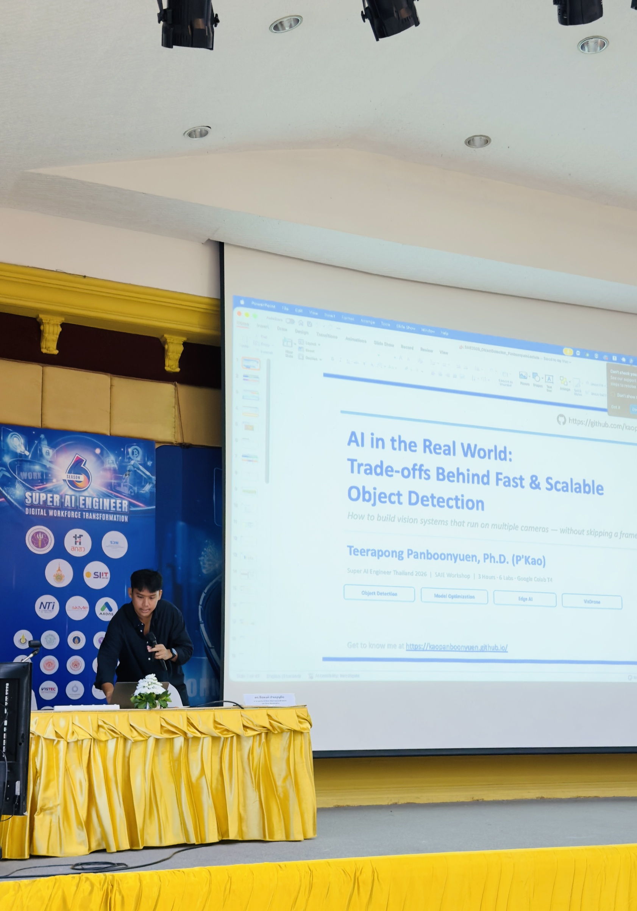
Figure 1: A few quiet moments before the workshop officially began. Standing on stage preparing the slides, testing the microphone, and introducing myself to the students felt surreal in a surprisingly good way. This was my first opportunity to teach at Super AI Engineer Thailand, and honestly, I was more excited than nervous. The entire workshop today — including slides, Colab notebooks, and implementation code — was intentionally prepared as open-source material because I wanted students to continue experimenting long after the session ended. Workshop materials: https://kaopanboonyuen.github.io/SAIE2026/
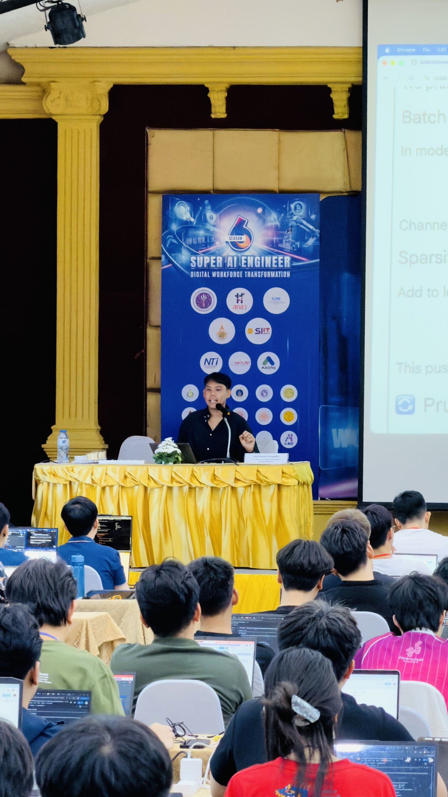
Figure 2: Officially opening today's session: “AI in the Real World: Trade-offs Behind Fast & Scalable Object Detection.” The workshop focused on how modern vision systems are engineered under real deployment constraints — not just how to maximize benchmark scores. Instead of discussing only accuracy metrics, we explored the systems-level realities behind production AI pipelines: latency ceilings, throughput bottlenecks, VRAM limitations, TensorRT acceleration, asynchronous inference, and scaling detection models across multiple concurrent camera streams. In many real-world environments, the best model is not necessarily the newest or the largest model — but the model that survives deployment constraints while remaining stable under load. Slide deck and implementation repository: https://github.com/kaopanboonyuen/SAIE2026
🚀 Lab 1 — Baseline Profiling: Before You Touch a Single Weight
Most engineers skip straight to optimization. That’s a mistake. Lab 1 is entirely about establishing ground truth — not training, not tweaking — just measuring.
What We Measure
$$\text{mAP} = \frac{1}{|C|} \sum_{c \in C} AP_c$$
$$AP_c = \int_0^1 p(r) , dr \approx \sum_{k=1}^{N} P(k) \cdot \Delta R(k)$$
Where $P(k)$ is precision at rank $k$ and $\Delta R(k)$ is the change in recall. This is the primary accuracy signal — but it tells you nothing about speed.
For speed, we track:
$$\text{FPS} = \frac{1}{\text{Average Latency per Frame (s)}}$$
And we compute an Efficiency Score that ties them together:
$$\text{Efficiency Score} = \frac{\text{mAP}}{\text{GFLOPs}}$$
Higher is better. This single number tells you how much accuracy you’re buying per unit of computation — and it’s what you should be optimizing when hardware is constrained.
Latency Benchmarking — The Right Way
Never trust a single inference time. Warm up the GPU, measure across enough samples to get stable statistics, and report P50 and P95 (tail latency matters for real-time systems):
def benchmark_latency(model_path, val_imgs, n_warmup=10, n_runs=50, device=0):
m = YOLO(model_path)
sample_imgs = random.sample(val_imgs, min(n_runs, len(val_imgs)))
# Critical: warm up first — cold GPU gives you garbage numbers
for img in sample_imgs[:n_warmup]:
_ = m.predict(img, imgsz=416, verbose=False, device=device)
torch.cuda.synchronize()
latencies = []
for img in sample_imgs:
t0 = time.perf_counter()
_ = m.predict(img, imgsz=416, verbose=False, device=device)
torch.cuda.synchronize() # Wait for GPU to actually finish
latencies.append((time.perf_counter() - t0) * 1000)
return {
"mean_ms": np.mean(latencies),
"p50_ms": np.percentile(latencies, 50),
"p95_ms": np.percentile(latencies, 95),
"fps": 1000 / np.mean(latencies)
}
The torch.cuda.synchronize() call is one of the most commonly missed details. Without it, you’re measuring how fast Python submits work to the GPU — not how fast the GPU completes it. For small models on fast hardware, the difference can be dramatic.
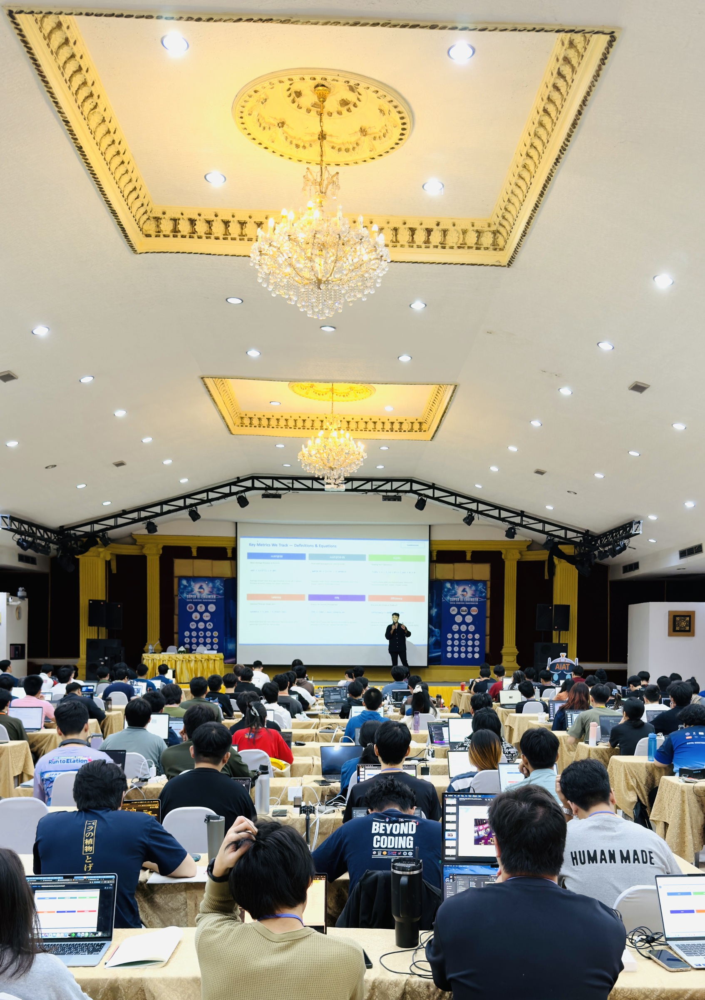
Figure 3: The atmosphere inside the workshop hall during the technical lecture session. Originally, I prepared six complete engineering labs covering scalable detection pipelines, edge AI deployment, model optimization, efficient inference scheduling, TensorRT acceleration, and deployment strategies for embedded systems such as NVIDIA Jetson devices. However, the session quickly evolved into a much deeper technical discussion than expected because students were highly engaged and continuously asking systems-level questions about inference efficiency, deployment bottlenecks, and practical optimization strategies. That energy completely changed the atmosphere of the room in the best possible way. As a teacher, there is something genuinely rewarding about seeing students become excited when the engineering concepts finally start connecting together.
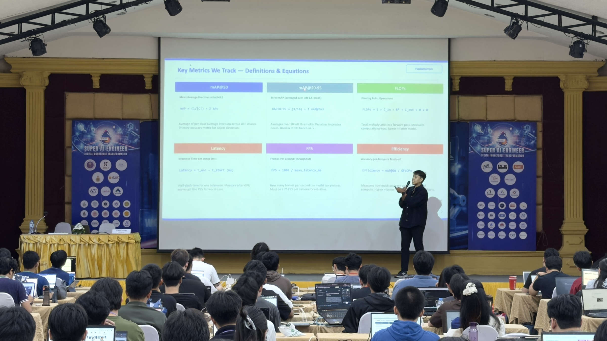
Figure 4: Beginning Lab 1: Baseline Profiling for Real-Time Object Detection Systems. Before optimizing any AI model, students first needed to understand how to properly measure performance. We discussed why FLOPs alone are insufficient, why latency measurements can be misleading, and why deployment-aware metrics matter significantly more in production environments. The workshop introduced the relationship between: FLOPs, latency, throughput, memory bandwidth, mAP, FPS stability, and overall efficiency score. One major takeaway from this section was simple: “A fast benchmark does not always imply a deployable system.”
✂️ Lab 2 — Structured Pruning: Remove What Doesn’t Matter
Not all neurons contribute equally. Structured pruning identifies and removes entire channels from convolutional layers, producing a genuinely smaller model — not a sparse one — so inference actually gets faster without specialized hardware.
The Pruning Criterion
We use an $\ell_1$-norm criterion on batch normalization scale factors $\gamma$:
$$\text{importance}(c) = |\gamma_c|_1$$
Channels with the smallest $|\gamma|$ contribute least to the output signal and are pruned first.
$$\text{Pruned set} = { c \mid |\gamma_c|_1 < \tau }$$
Where $\tau$ is a percentile threshold (e.g., prune the bottom 30% of channels by $\ell_1$-norm magnitude).
def get_pruning_mask(model, prune_ratio=0.3):
# Collect all BN gamma (scale) parameters from the backbone
all_gammas = []
for name, module in model.named_modules():
if isinstance(module, nn.BatchNorm2d):
all_gammas.append(module.weight.data.abs())
all_gammas_cat = torch.cat(all_gammas)
threshold = torch.quantile(all_gammas_cat, prune_ratio)
masks = {}
for name, module in model.named_modules():
if isinstance(module, nn.BatchNorm2d):
masks[name] = (module.weight.data.abs() >= threshold)
return masks
The key insight: after pruning, you must fine-tune. Pruned models can lose 5–15% mAP immediately. Fine-tuning for even a few epochs recovers most of that loss — and the resulting model is permanently smaller.
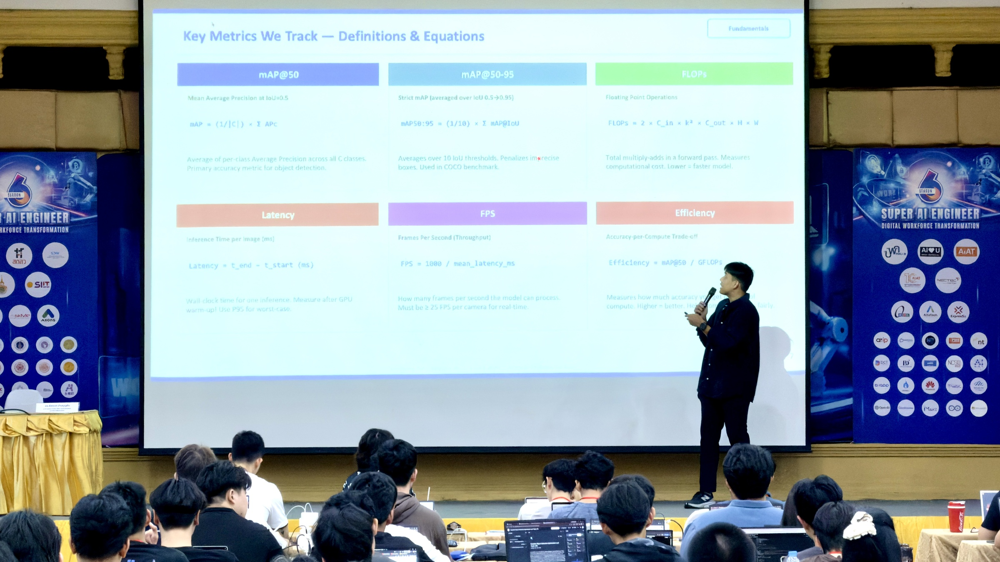
Figure 5: Diving deeper into the evaluation metrics behind modern object detection systems. This section focused on helping students build intuition around what performance numbers actually mean in practice. We explored how mAP behaves under different IoU thresholds, why throughput collapses under multi-stream inference, and how latency variance can become a hidden deployment failure point even when average FPS appears acceptable. Real-world AI engineering is often less about maximizing a single metric and more about balancing multiple competing constraints simultaneously.
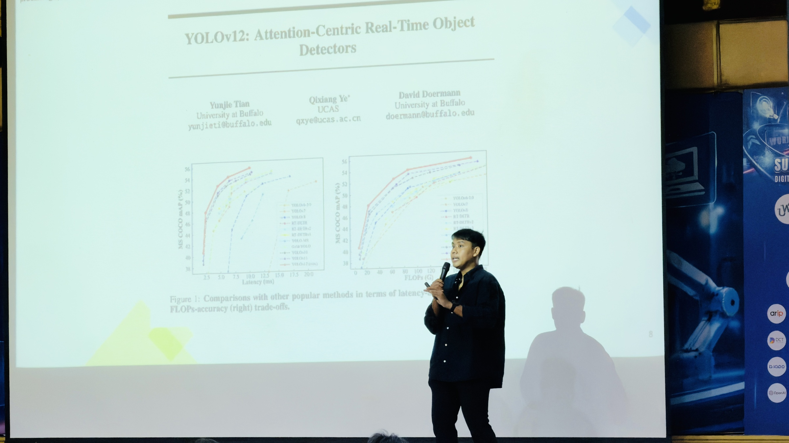
Figure 6: Introducing YOLOv12: Attention-Centric Real-Time Object Detectors. One important point discussed throughout the workshop was that real production systems rarely care about “the newest model” alone. In practice, engineers care about models that provide the best balance between: speed, stability, accuracy, deployment cost, and scalability. To illustrate this idea, we explored the YOLOv12 paper presented at NeurIPS 2025 by researchers from the University at Buffalo and the University of Chinese Academy of Sciences. The discussion focused heavily on how modern attention mechanisms are being redesigned specifically for efficient real-time detection workloads rather than purely offline research benchmarks. Paper link: https://neurips.cc/virtual/2025/loc/san-diego/poster/116765
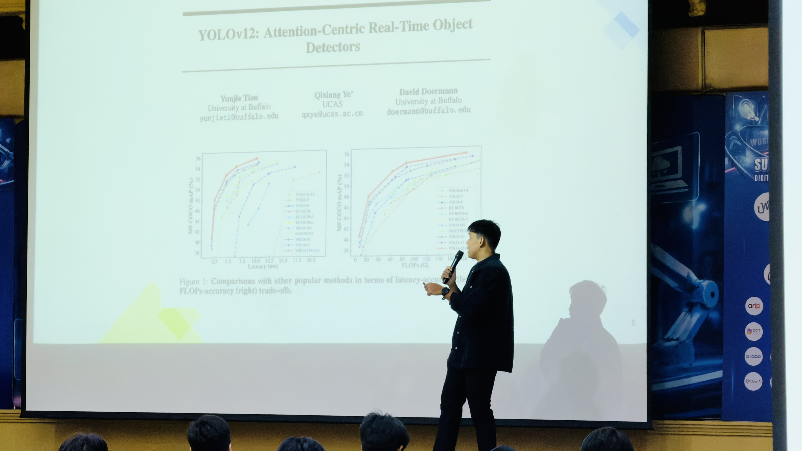
Figure 7: Continuing the discussion around modern YOLO architectures and efficiency-oriented detector design. We analyzed how the latest generation of real-time detectors increasingly focuses on optimizing attention efficiency rather than simply scaling network depth or parameter count. The workshop also emphasized an important engineering principle: production AI systems are fundamentally constrained systems. Every additional millisecond of latency, every extra megabyte of VRAM, and every unstable inference spike eventually becomes a deployment problem at scale.
⚡ Lab 3 — Quantization: Fewer Bits, Same Predictions
Quantization reduces the numerical precision of model weights and activations. The most impactful transitions are:
- FP32 → FP16: ~2× speedup, essentially zero accuracy loss on modern GPUs with Tensor Cores
- FP16 → INT8: Another ~2× speedup, ~1–2% mAP loss, requires calibration
The mathematical model for uniform quantization:
$$Q(x) = \text{round}\left(\frac{x}{\Delta}\right) \cdot \Delta$$
Where:
$$\Delta = \frac{x_{\max} - x_{\min}}{2^b - 1}$$
And $b$ is the bit-width (8 for INT8, 16 for FP16). The quantization error is bounded by $\frac{\Delta}{2}$, which is why calibration data matters — you want $x_{\max}$ and $x_{\min}$ to reflect the true activation range of your specific deployment data.
For our YOLOv8s baseline on the VisDrone subset, FP16 is essentially a free lunch:
# FP16 inference — one-line change
results = model.predict(img, imgsz=416, half=True, device=0)
half=True tells Ultralytics to run the forward pass in FP16. On an NVIDIA T4, this alone typically gives a 1.5–2× throughput gain with no measurable mAP degradation.
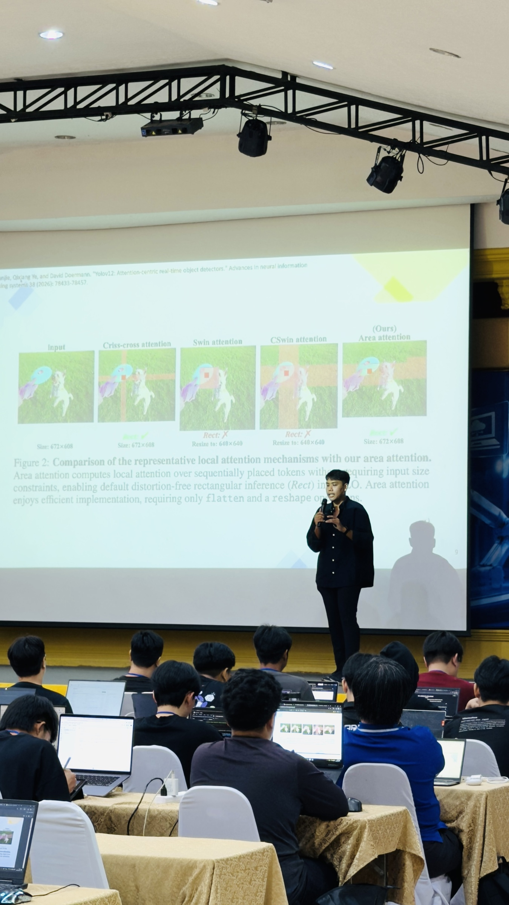
Figure 8: Exploring efficient attention mechanisms used inside modern real-time detection architectures. This section covered several attention variants including: Criss-Cross Attention, Swin Attention, CSWin Attention, and Area Attention as discussed in YOLOv12. Rather than treating attention as a purely theoretical concept, the discussion focused on the computational trade-offs behind each design: receptive field coverage, memory complexity, token interaction cost, and inference scalability under real-time constraints. Understanding these trade-offs becomes extremely important once models leave research papers and enter production systems.
🧠 Lab 4 — Knowledge Distillation: Teaching a Small Model to Think Big
This is the lab that I find most intellectually satisfying. Knowledge distillation isn’t compression in the traditional sense — it’s curriculum design. You train a small student network to mimic the output distribution of a large, accurate teacher.
The Distillation Loss
Standard cross-entropy trains against hard labels (0 or 1). Distillation trains against soft teacher logits — the full probability distribution the teacher assigns across all classes:
$$L_{KD} = (1 - \alpha) \cdot L_{CE}(y, \hat{y}_s) + \alpha \cdot T^2 \cdot KL\left(\sigma\left(\frac{z_t}{T}\right) | \sigma\left(\frac{z_s}{T}\right)\right)$$
Where:
- $z_t$, $z_s$ are teacher and student logits
- $T$ is the temperature — higher $T$ softens the distribution, exposing inter-class relationships the student can learn from
- $\alpha$ balances hard label loss vs. distillation loss
- $\text{KL}$ is the Kullback–Leibler divergence
The $T^2$ factor is critical and often forgotten: it compensates for the fact that soft targets are scaled down by $T$, which would otherwise reduce the gradient magnitude by $T^2$.
def distillation_loss(student_logits, teacher_logits, true_labels,
alpha=0.7, temperature=4.0):
# Soft target loss
soft_teacher = F.softmax(teacher_logits / temperature, dim=-1)
soft_student = F.log_softmax(student_logits / temperature, dim=-1)
kd_loss = F.kl_div(soft_student, soft_teacher, reduction='batchmean')
# Hard label loss
ce_loss = F.cross_entropy(student_logits, true_labels)
# T^2 scales the KD gradient back to normal magnitude
return (1 - alpha) * ce_loss + alpha * (temperature ** 2) * kd_loss
In practice on our VisDrone setup: a YOLOv8n student distilled from a YOLOv8s teacher recovers ~92% of the teacher’s mAP at 2.2× the teacher’s FPS. That’s a genuinely useful operating point.
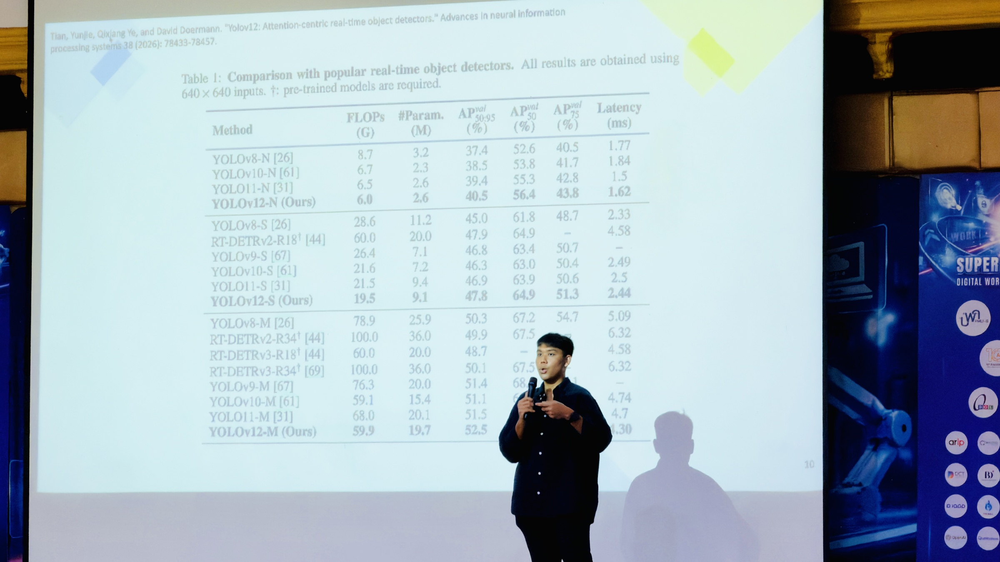
Figure 9: Analyzing the benchmark results and reporting methodology used in YOLOv12. One recurring theme throughout the workshop was the importance of reading benchmark tables carefully rather than blindly trusting headline numbers. We discussed hidden deployment variables such as: input resolution, TensorRT optimization, precision modes, hardware-specific acceleration, batch size effects, and evaluation environments. Many “real-time” claims in research papers can look very different once tested under production workloads.
🧩 Lab 5 — Tiny Model Design: Architecture Matters
Beyond training recipes, the model architecture itself determines the efficiency ceiling. Two key tools in the lightweight design toolkit:
Depthwise-Separable Convolutions
Standard conv: $C_{in} \times C_{out} \times k^2$ FLOPs per spatial position.
DW-Sep conv: $C_{in} \times k^2 + C_{in} \times C_{out}$ FLOPs per position.
From a systems engineering perspective, depthwise separable convolution provides a massive computational advantage over standard convolution by factorizing spatial and channel-wise operations.
For a typical 3×3 detection head with 128 output channels, the theoretical compute reduction approaches nearly 9× fewer FLOPs, which directly translates into:
- lower latency
- reduced VRAM pressure
- higher multi-stream throughput
- better edge-device deployability
This optimization becomes especially important when scaling object detection across multiple concurrent camera feeds.
class LightweightDetHead(nn.Module):
"""Depthwise-Separable detection head."""
def __init__(self, in_ch, mid_ch, num_classes, k=3):
super().__init__()
self.dw = nn.Conv2d(in_ch, in_ch, k, padding=k//2,
groups=in_ch, bias=False) # depthwise
self.bn1 = nn.BatchNorm2d(in_ch)
self.pw = nn.Conv2d(in_ch, mid_ch, 1, bias=False) # pointwise
self.bn2 = nn.BatchNorm2d(mid_ch)
self.act = nn.SiLU()
self.out = nn.Conv2d(mid_ch, num_classes + 4, 1)
def forward(self, x):
x = self.act(self.bn1(self.dw(x)))
x = self.act(self.bn2(self.pw(x)))
return self.out(x)
Input Resolution Scaling
FLOPs scale quadratically with input resolution. Halving image size cuts FLOPs by 4×:
$$\text{FLOPs} \propto H \times W \propto \text{imgsz}^2$$
This is one of the fastest levers available. The practical question is where the accuracy cliff is for your specific data. For VisDrone’s predominantly tiny objects, going below 320px starts hurting badly because the P3 stride-8 detection head needs enough spatial resolution to see objects that might only be 8–15px wide at full resolution.
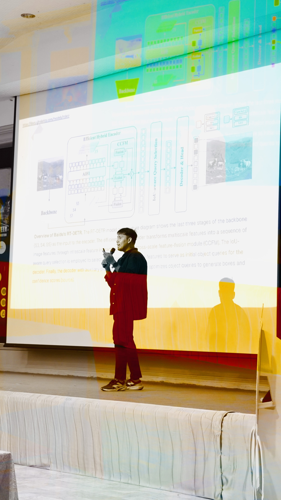
Figure 10: Introducing Baidu's RT-DETR: A Vision Transformer-Based Real-Time Object Detector. This section explored how transformer-based detectors are evolving toward practical real-time deployment scenarios. We discussed the architecture of RT-DETR, including: multiscale feature extraction, the efficient hybrid encoder, intra-scale feature interaction (AIFI), and cross-scale feature fusion modules (CCFM). Students were particularly interested in how RT-DETR attempts to bridge the gap between transformer accuracy and real-time inference efficiency. Documentation: https://docs.ultralytics.com/models/rtdetr/
🌐 Lab 6 — Multi-Camera Deployment: The Real Engineering Problem
Everything in Labs 1–5 is preparation for this. Lab 6 is where the rubber meets the road: can you actually serve 4 cameras at 25 FPS each?
System Throughput Model
With $N$ cameras at target frame rate $R$ and per-frame model latency $L$ milliseconds:
$$\text{Required FPS} = N \cdot R$$
For batched inference across all $N$ camera streams simultaneously, latency scales approximately sub-linearly:
$$L_{\text{batch}}(N) = L_{\text{single}} \cdot \left(1 + \alpha \cdot \log N\right)$$
This means GPU utilization improves with batch size — a single large batch uses GPU memory bandwidth more efficiently than many sequential small ones.
def batch_inference_benchmark(model_path, imgs,
batch_sizes=[1, 2, 4, 8],
imgsz=416, device=0):
m = YOLO(model_path)
results = {}
for bs in batch_sizes:
batch = random.sample(imgs, min(bs, len(imgs)))
# Warm up
for _ in range(3):
_ = m.predict(batch, imgsz=imgsz, verbose=False, device=device)
torch.cuda.synchronize()
times = []
for _ in range(max(1, 20 // bs)):
t0 = time.perf_counter()
_ = m.predict(batch, imgsz=imgsz, verbose=False, device=device)
torch.cuda.synchronize()
times.append(time.perf_counter() - t0)
throughput = bs / np.mean(times)
results[bs] = {"throughput_fps": throughput,
"latency_ms": np.mean(times) * 1000}
print(f"Batch={bs:2d} | {np.mean(times)*1000:.1f} ms | {throughput:.1f} img/s")
return results
PyTorch → ONNX → TensorRT: The Deployment Stack
The full optimization pipeline for a production edge deployment:
Training (PyTorch FP32)
↓
Export (ONNX — portable intermediate format)
↓
Compile (TensorRT on Jetson — hardware-fused kernels)
↓
Deploy (INT8 + batched streams on edge GPU)
On a Jetson Nano (128-core Maxwell, 4GB LPDDR4):
| Configuration | FPS per stream |
|---|---|
| Single camera, FP16 | ~20–25 |
| Dual camera | ~12–15 |
| 4 cameras | ~6–8 |
To hit 4 cameras × 25 FPS = 100 total FPS, you need either a more powerful GPU or a model small enough that batched inference amortizes the compute:
# Edge deployment — multi-camera stream on Jetson
from ultralytics import YOLO
model = YOLO("model.engine") # TensorRT-compiled model
sources = ["rtsp://cam1", "rtsp://cam2", "rtsp://cam3", "rtsp://cam4"]
results = model.predict(source=sources, stream=True)
The answer to the final hackathon challenge — which the students had to solve themselves — is YOLOv8n + Knowledge Distillation + FP16, batch size 4. It’s the only combination in our ablation that simultaneously hits the throughput target and keeps mAP within 20% of the baseline.
📊 Final Results Dashboard
| Technique | Speed Gain | mAP Drop | Difficulty |
|---|---|---|---|
| FP16 Quantization | ~1.5–2× | ~0% | ⭐ |
| INT8 Quantization | ~2–4× | ~1–2% | ⭐⭐ |
| Structured Pruning | ~1.2–2× | ~2–5% | ⭐⭐⭐ |
| Knowledge Distillation | ~2–3× | ~5–8% | ⭐⭐⭐ |
| DW-Sep Head Design | ~1.3× | ~1–3% | ⭐⭐ |
| Smaller Input Size | quadratic | ~3–10% | ⭐ |
Combined intelligently: ~3–5× faster with less than 10% mAP drop. That’s the difference between a model that sits on a benchmark and a model that ships.
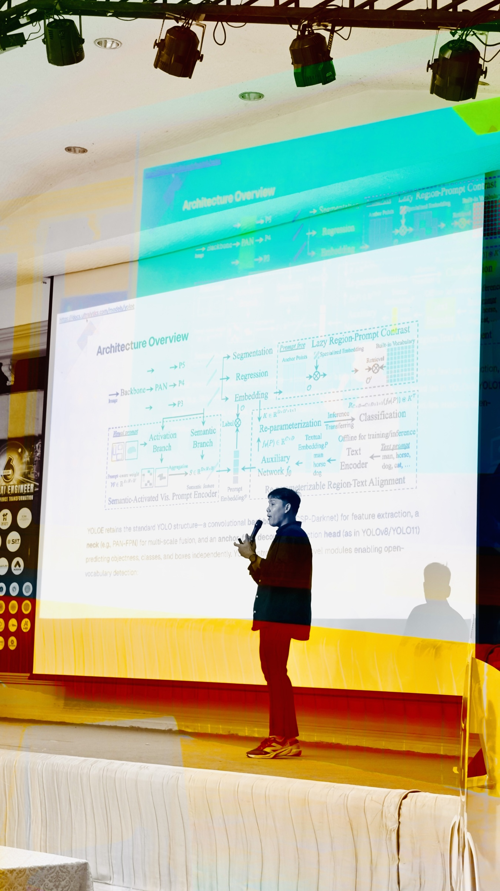
Figure 11: Exploring YOLOE and the future direction of open-vocabulary object detection systems. Unlike traditional YOLO architectures restricted to fixed categories, YOLOE introduces promptable detection using text, image, and internal vocabulary guidance for zero-shot inference. This part of the workshop sparked many discussions around the future of foundation models in computer vision: systems capable of detecting unseen categories dynamically without retraining. We also discussed how open-vocabulary systems may eventually reshape edge AI applications, robotics, and adaptive perception systems operating in uncertain environments. Documentation: https://docs.ultralytics.com/models/yoloe/
🧠 The Core Engineering Principle
$$\text{Accuracy} \leftrightarrow \text{Speed} \leftrightarrow \text{Memory}$$
There is no free lunch. Every optimization technique moves you somewhere on this triangle. The job of the AI engineer is not to find the highest point on the accuracy axis — it’s to find the point on the Pareto frontier that satisfies your deployment constraints.
That’s what I wanted every student in the room to leave with. Not a set of tricks, but a framework for reasoning about trade-offs.
💬 Closing Thoughts
Today was genuinely a very good day.
I arrived in Pathum Thani at 8 AM, set up in a room full of students who had already been building AI systems for weeks, and spent three hours going deeper than I usually get to go in a workshop. We didn’t finish all six labs live — time is finite and concepts deserve space — but everything is open source and the students have everything they need to continue.
To the Artificial Intelligence Association of Thailand (AIAT): thank you for organizing a camp that treats AI engineering as a serious craft, not a series of model.fit() calls. It’s a privilege to contribute to something like this.
To every student in Super AI Engineer Season 6: the fact that you’re here, learning things this hard, this early — that matters. The engineers who understand why a model is fast are the ones who will build the systems that actually work in the real world. I hope today gave you some of that intuition.
Go build things. Make them fast. Know your trade-offs. 🚁
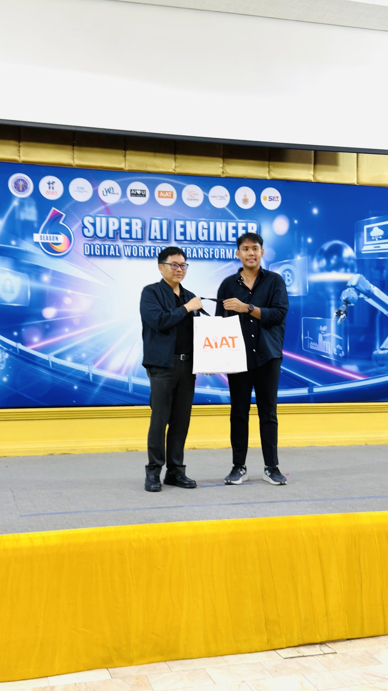
Figure 12: Closing the workshop session after an unexpectedly intense and highly interactive morning. The organizing team kindly gave me a small gift afterward, but honestly, the most rewarding part of the day was seeing students become genuinely curious about systems optimization, model efficiency, pruning strategies, and scalable deployment engineering. If even a few ideas from today's workshop eventually help someone build useful systems in the future, then the trip was already completely worth it.
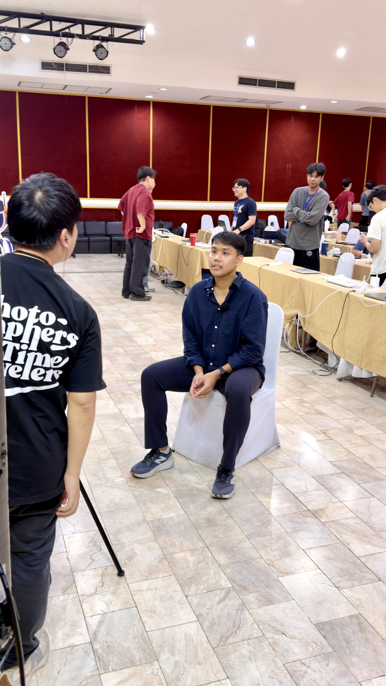
Figure 13: A surprise interview session immediately after the workshop ended!. The Super AI Engineer team asked me to share thoughts about the workshop, deployment engineering, and the topics covered throughout the session. Honestly, I was not prepared at all and probably looked slightly panicked while answering questions spontaneously. But perhaps that is the fun part of technical conversations — sometimes the most genuine answers happen when you are simply speaking from experience rather than reading prepared scripts.
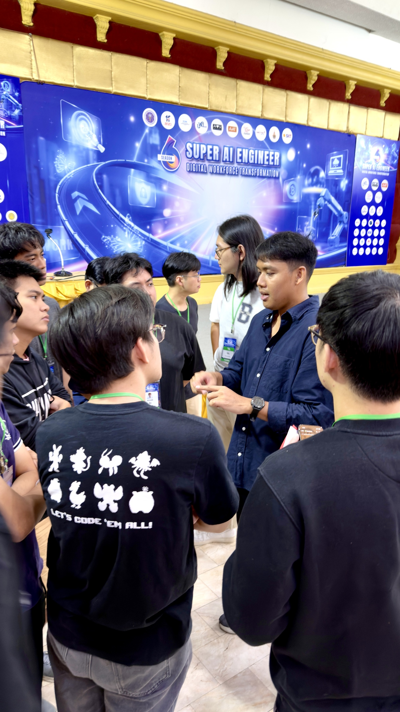
Figure 14: After the session officially ended, many students stayed behind to continue discussing pruning strategies, model stacking, optimization pipelines, and deployment trade-offs. This became one of my favorite moments of the day because the conversations shifted naturally from lecture material into deeper engineering curiosity. Watching students actively connect research ideas with deployment realities is probably one of the most satisfying parts of teaching AI engineering.
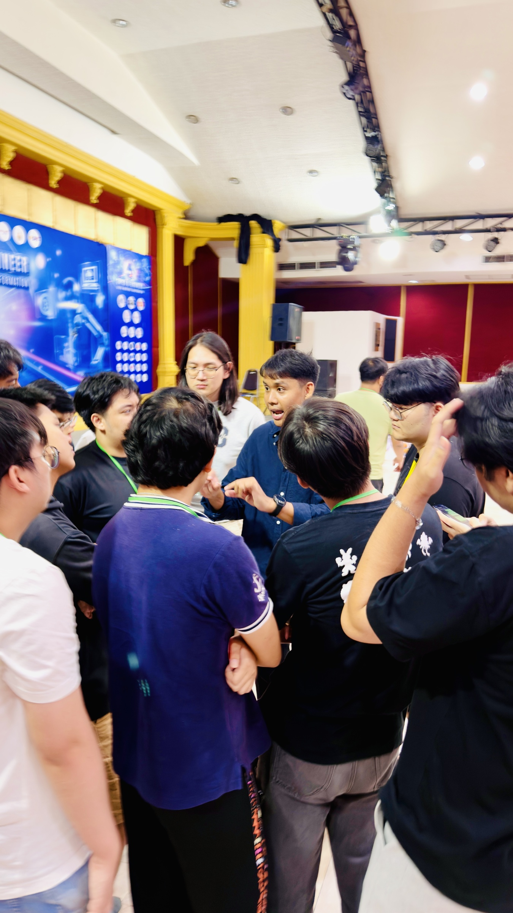
Figure 15: Continuing technical discussions with students long after the workshop had officially finished. We talked about pruning pipelines, ensemble strategies, stacked models, inference scheduling, and how to balance accuracy with deployment cost under constrained hardware environments. Moments like this are honestly the reason I enjoy teaching. Sometimes the best learning does not happen during the lecture itself — it happens afterward, when students begin asking deeper questions beyond the slides.
🔗 Resources
- Workshop overview: kaopanboonyuen.github.io/SAIE2026
- All slides + notebooks: github.com/kaopanboonyuen/SAIE2026
- Super AI Engineer Thailand: superai.in.th
- AIAT: aiat.or.th
Teerapong Panboonyuen, Ph.D. (P’Kao)
Instructor — Super AI Engineer Thailand | SAIE Workshop
May 18, 2026 — Pathum Thani
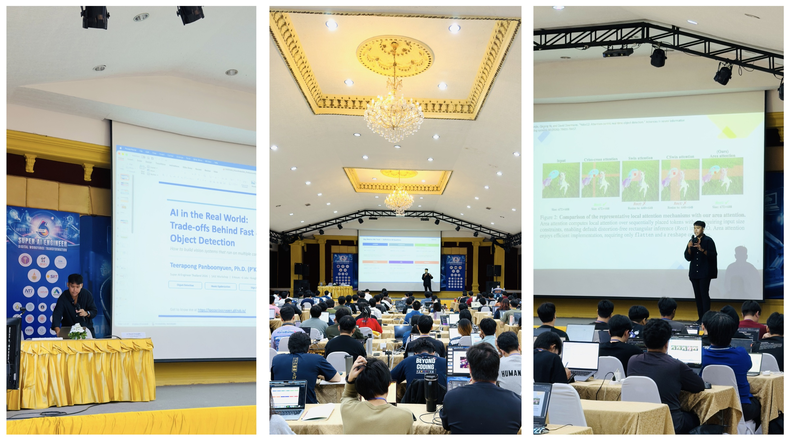
Figure 16: A merged visual summary of today's workshop — version one. Looking back at the photos afterward, it reminded me how energetic the entire session felt from beginning to end. Between debugging Colab notebooks, discussing deployment bottlenecks, and talking about scalable AI systems for hours, the workshop somehow felt both technically intense and genuinely fun at the same time.
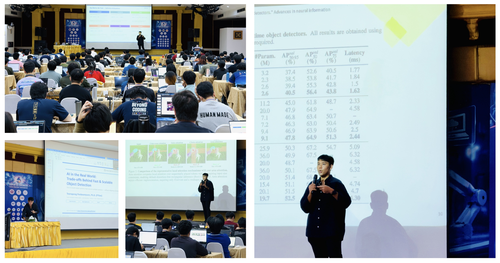
Figure 17: Another merged recap of the workshop atmosphere throughout the day. One thing I appreciated most was how naturally the discussion evolved from traditional object detection topics into broader conversations around systems engineering, scalable inference, and deployment-aware AI design. That transition reflects how modern AI engineering is increasingly becoming a systems problem rather than purely a modeling problem.
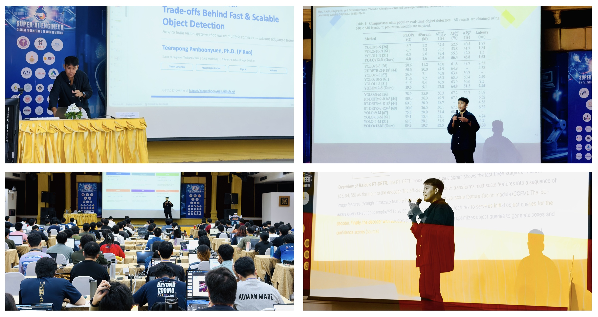
Figure 18: Final merged cover image summarizing the entire Super AI Engineer Thailand 2026 workshop experience. Out of all the edited versions, this one became my personal favorite and eventually turned into the blog cover image. Today was exhausting, chaotic, deeply technical, and incredibly enjoyable all at once. More importantly, it was another reminder that sharing knowledge — even small engineering tricks, deployment lessons, or debugging experiences — can genuinely help others continue growing in their own AI journey.
“AI is not just about building smarter models — it’s about building systems that work in the real world, under real constraints, for real people.
Keep learning, keep building, and don’t be afraid of hard problems — because that’s exactly where real engineers are made.
The future of AI won’t be written by tools, but by the people who refuse to stop improving them.”
— P’Kao 🚀
Citation
Panboonyuen, Teerapong. (May 2026). Teaching Scalable AI Systems and Knowledge Distillation at Super AI Engineer Thailand. Blog post on Kao Panboonyuen. https://kaopanboonyuen.github.io/blog/2026-05-18-teaching-scalable-ai-systems-and-knowledge-distillation-at-super-ai-engineer-thailand
For a BibTeX citation:
@article{panboonyuen2026superai,
title = "Teaching Scalable AI Systems and Knowledge Distillation at Super AI Engineer Thailand",
author = "Panboonyuen, Teerapong",
journal = "kaopanboonyuen.github.io/",
year = "2026",
month = "May",
day = "18",
url = "https://kaopanboonyuen.github.io/blog/2026-05-18-teaching-scalable-ai-systems-and-knowledge-distillation-at-super-ai-engineer-thailand"
}
Thank you for reading this technical reflection on scalable AI systems, multi-camera object detection, edge AI deployment, and knowledge distillation for real-world computer vision engineering. 🚀🧠⚡
If this article inspired you, feel free to share it with researchers, engineers, students, startups, and AI enthusiasts building the next generation of efficient and scalable AI systems.
Teerapong Panboonyuen
My research focuses on leveraging advanced machine intelligence techniques, specifically computer vision, to enhance semantic understanding, learning representations, visual recognition, and geospatial data interpretation.